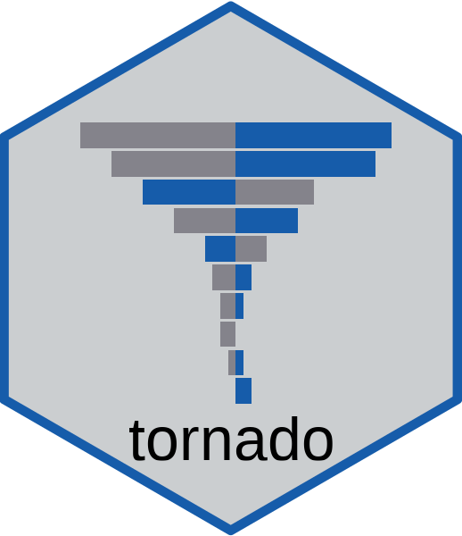
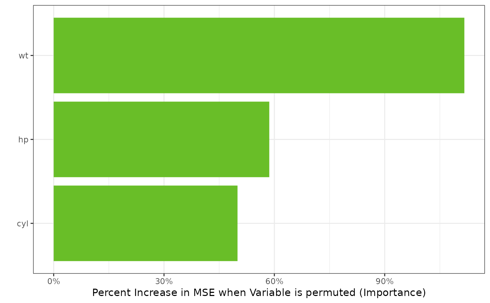

Plot Variable Importance for a GLMNET model
Source:R/importance_glmnet.R
importance.cv.glmnet.RdPlot Variable Importance for a GLMNET model
Usage
# S3 method for class 'cv.glmnet'
importance(model_final, model_data, form, dict = NA, nperm = 500, ...)Value
an object of type importance_plot
- type
the type of importance plot
- data
the importance data required for the plot
Examples
if (requireNamespace("glmnet", quietly = TRUE))
{
form <- formula(mpg ~ cyl*wt*hp)
mf <- model.frame(form, data = mtcars)
mm <- model.matrix(mf, mf)
gtest <- glmnet::cv.glmnet(x = mm, y = mtcars$mpg, family = "gaussian")
imp <- importance(gtest, mtcars, form, nperm = 50)
plot(imp)
}
